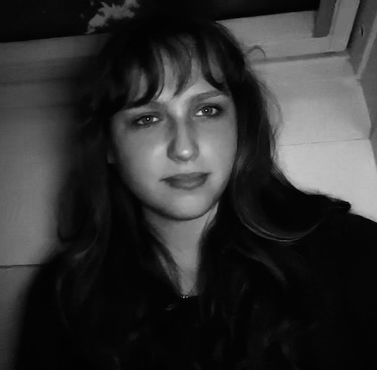
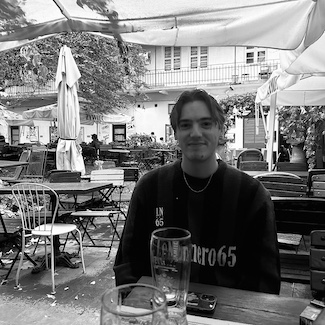

Over ons
Dofien Kales
Al van jongs af aan heeft Dofien een bijzondere fascinatie voor true crime. Of het nu gaat om de klassiekers of de minder bekende verhalen, Dofien weet elke zaak tot leven te brengen met meeslepende vertellingen en een diep respect voor de slachtoffers. Haar talent om spanning op te bouwen en luisteraars op het puntje van hun stoel te houden, maakt haar een onmisbaar deel van In de Schaduw van de Waarheid.
Dion Bosch
Als getalenteerde verhalenverteller is Dion het creatieve hart van In de Schaduw van de Waarheid. Met zijn unieke stem, vloeiende narratief en krachtige schrijfstijl weeft Dion de puzzelstukjes van elke zaak samen tot een boeiende en meeslepende ervaring. Zijn passie voor storytelling zorgt ervoor dat elke aflevering blijft nazinderen, lang nadat je hebt geluisterd.
Vincent van Heukelom
Vincent is de speurneus van het team. Met een scherp analytisch vermogen en een onuitputtelijke nieuwsgierigheid graaft hij door politieverslagen, getuigenverklaringen en onbeantwoorde vragen. Als een echte detective laat Vincent geen steen onomgedraaid en betrekt de luisteraar in het speurwerk, waarbij elk detail wordt besproken alsof je zelf op onderzoek bent.
Salomé de Bruijn
Waar anderen zich op feiten richten, kijkt Salomé naar de menselijke kant van elke zaak. Met empathie en begrip geeft zij slachtoffers en nabestaanden een stem. Haar manier van vertellen herinnert luisteraars eraan dat achter elke zaak echte mensen en onvergetelijke verhalen schuilgaan. Het is deze persoonlijke touch die In de Schaduw van de Waarheid zo aangrijpend maakt.